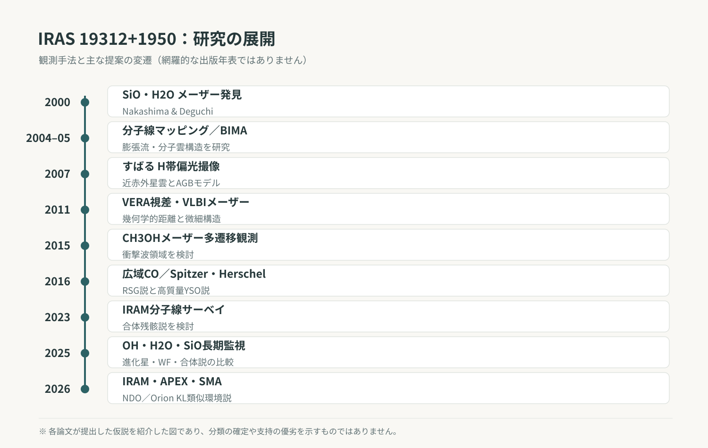
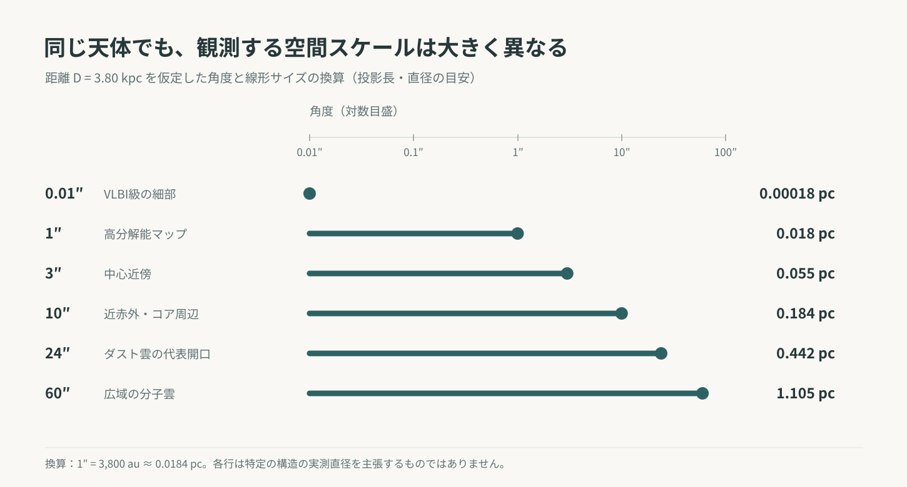
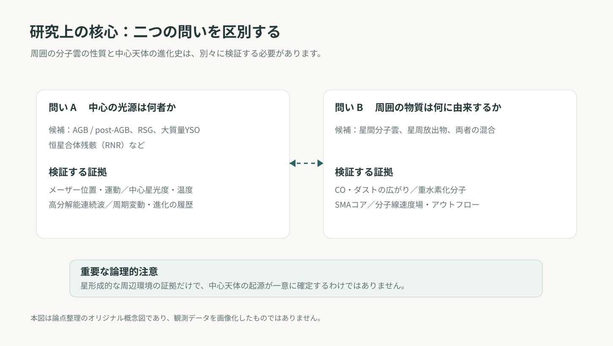

概要：進化星に似たメーザーと冷たい分子雲
宇宙にある天体の多くは、観測上のいくつかの特徴から、おおまかな進化段階を見当づけることができる。しかし、天の川銀河内の赤外線源 IRAS 19312+1950 は、その常識がうまく働かない例として研究されてきた。典型的な酸素過剰の晩期型星によく見られるSiO、H₂O、OHメーザーを放射する一方、周囲には膨大な低温分子ガスが分布し、双極的な構造、高速アウトフロー、星形成領域でしばしば見られる分子化学的特徴が共存している。[A01, A02, A03, A04, A05, A09, A10, A11, A12, A13, A14]
2000年にNakashima & DeguchiがSiOとH₂Oメーザーを発見して以降、野辺山45 m、BIMA、すばる望遠鏡、VERA、VLBI、Spitzer、Herschel、IRAM 30 m、APEX、SMAなどによって、赤外線からセンチ波・ミリ波まで多波長の研究が積み重ねられた。初期には進化星と星間分子雲の重なり、のちには赤色超巨星、大質量原始星、恒星合体後の残骸などが候補として論じられた。[A01, A02, A03, A04, A05, A06, A07, A08, A09, A10, A11, A12, A13, A14]
2026年、Gongらはこの天体を Nakashima–Deguchi object（NDO） と呼び、分子雲の内部に少なくとも四つのダストコアがあることを示した。冷たい分子雲、重水素化分子、多様な分子線、広角の双極アウトフローという組み合わせから、Orion KLに類似する星形成環境の可能性を提案した。[A14] この名称は査読論文の題名に実際に用いられているが、IAU等の正式命名が認定されたという意味ではない。
ここで一つの大切な区別がある。「メーザーを放射する中心天体は何か」と「その周囲にある分子雲は何に由来するか」は、別々の科学的問題である。 周辺に星形成的な環境があることが分かっても、中心のメーザー源が降着中の若い星であると直ちに証明されたわけではない。本稿では、何が直接観測され、何がモデルから推定され、何がなお仮説なのかを分けながら、研究の歴史をたどる。

1．発見：「冷たいIRAS天体」から予想外のSiOメーザー
IRAS（Infrared Astronomical Satellite）は1983年の全天赤外線観測によって、星形成領域から晩期型星まで、赤外線に明るい数多くの天体を検出した。IRAS 19312+1950もその一つだったが、初期段階での分類は明らかではなかった。
2000年のNakashima & Deguchiの論文では、SiOの振動励起メーザーと22 GHzのH₂Oメーザーが検出された。[A01] SiOメーザーは、大気が脈動している酸素過剰のAGB星や赤色超巨星の近傍でよく見つかる。H₂Oメーザーも、そうした星のガス流で珍しくない。この組み合わせは、まず晩期型星という考えに根拠を与えた。しかし、2MASSの近赤外画像には中心源から伸びる星雲状の構造が見られ、分子の熱放射線とメーザーの速度も単純には重ならなかった。すでに発見時から、典型的な星周殻だけでは理解しにくい特徴が認識されていた。
2003年には、冷たいIRAS天体143源を対象とするSiOメーザーサーベイの文脈でも本天体の特異性が議論された。[B01] この発見の重要性は、SiOメーザーを見つけたこと自体にとどまらない。「メーザーを持つ低温進化星」という有力な解釈が、周囲の星雲や熱的な分子ガスの観測によって繰り返し試されるようになった点にある。


2．分子線は二つの速度成分を示した
2004年から2005年にかけての単一鏡とBIMA干渉計観測は、IRAS 19312+1950を研究するうえでの基礎を作った。CO、¹³CO、C¹⁸O、CS、HCN、HCO⁺、SOなどの熱的分子線には、幅の広い成分と幅の狭い成分が現れる。[A02, A03, A04, A05] 一部の線では数十 km s⁻¹に及ぶ幅広い放射が見られる一方、狭い成分は数 km s⁻¹程度の速度範囲に集中する。
最初に注意すべき点は、分子線の「広い」「狭い」が、そのまま二つの独立した天体の存在を意味しないことである。線幅は流れの速度だけでなく、視線に沿った異なる位置の重なり、光学的厚さ、観測した分子種、検出感度によっても異なり得る。さらに、単一鏡は広がった放射に感度がある一方、干渉計では短い空間周波数成分が回収されず、広がった構造が弱く見える場合がある。
野辺山の分子線マッピングは、大きな速度幅のガスと狭い速度成分が、空間分布にも化学的性質にも違いを持つことを示した。[A02, A03] 2004年の分子化学研究では、HCO⁺、SiO、SO、SO₂、HCN、HNC、NH₃、N₂H⁺、CH₃OHを含む多種類の分子が確認され、狭い成分の組成には低温の暗黒分子雲に似た特徴があると報告された。[A03] 当時は、進化した中心星が分子雲に埋もれているという考えが提案された。
BIMAによるHCO⁺の干渉計観測では双極的な速度構造が示され、アウトフローの存在を議論する根拠となった。[A04] 続く複数分子線のBIMA観測では、COの広線幅成分が球対称風モデルである程度説明される一方、狭い成分にも双極的な空間分布があることが報告された。[A05] 二つの論文を読む際、HCO⁺とCOの積分速度範囲・角分解能が違うことを無視して「どちらの成分が双極的か」という二者択一の矛盾にしてはならない。
ここで見えてきたのは、中心源の近傍で運動するガスと、その周囲に広がる比較的冷たい分子ガスを、単一の単純な球対称モデルに押し込めることの難しさだった。
3．すばる望遠鏡で明らかになった非球対称の赤外星雲
電波の分子線観測と同時に、近赤外の形態も重要な手掛かりを与えてきた。Murakawaら（2007）はすばる望遠鏡によるH帯撮像偏光観測を行い、中心付近の比較的丸い構造に加え、北西から南東に伸びるS字状の腕状構造や別のローブ状構造を調べた。[A06]
ダスト粒子が中心からの光を散乱すると、散乱光は偏光する。偏光ベクトルの分布を調べれば、直接には見えない照明源とダストの幾何配置に制約を与えられる。観測された広範な中心対称的偏光パターンは、散乱によって見える星雲という解釈と整合した。
Murakawaらはダストの放射輸送モデルによって、当時の仮定のもとで有効温度約2,800 K、光度約7,000太陽光度という低温の中心星を想定した。[A06] これは酸素過剰のAGB星の描像に近い。ただし、散乱光から推定する星の温度や光度は、ダストの組成、密度分布、傾斜角、距離などと結び付いている。モデルが観測を再現できたことと、他の物理モデルが排除されたことは同じではない。
近赤外偏光像とモデルはMurakawaら（2007）の原著を参照。
4．VERAが与えた幾何学的距離
星の距離は、観測された角度を実際の長さに変換するだけでなく、光度や分子ガス質量の推定にも関わる。Imaiら（2011）は、VERAによるH₂Oメーザーの高精度位置測定から年周視差を求めた。[A07]
観測値は
であり、これに基づく代表距離は
と報告されている。ここで \(\varpi\) は年周視差、\(D\) は距離である。初歩的には、視差を秒角単位で表したときに \(D(\mathrm{pc})\simeq1/\varpi(\mathrm{arcsec})\) となる。ただし、この関係を誤差付き観測値に適用すると、距離の誤差は一般に対称にはならない。また年周視差には測定エラー・メーザースポット選択の問題が伴う。
この距離を採用すると、角度と投影距離の関係は
となる。ここで θ はラジアン単位の角度であり、小角近似を用いている。例えば10 masという微小な角度は約38 auに相当する。遠方の分子雲の尺度を直感的に掴むには、この換算が便利である。長さは距離の一次に依存し、その他の仮定が同じなら観測フラックスから求める光度・薄いダスト放射からの質量は通常距離の二乗に依存する。


5．メーザーは中心付近のどのような運動を見ているのか
SiO、H₂O、OHメーザーはいずれも分子からの電波放射だが、放射が強くなる励起条件は異なる。典型的な酸素過剰の進化星では、SiOメーザーは星の比較的近く、H₂Oメーザーはより外側、OHメーザーはさらに外側の領域を探ることが多い。ただし、これは一般的傾向であり、この天体のすべてのメーザーが同心円状の殻に属すると確定したわけではない。
Nakashimaら（2011）はVLBIとMERLINによってメーザー源の位置と速度を調べた。[A08] H₂Oメーザーでは赤方・青方成分が分離しており、その代表的な成分の角度間隔は約10.9 masだった。距離3.8 kpcを仮定すれば投影間隔は約41 auである。著者らは、円盤の単純なケプラー回転よりも双極的な流れに整合的であると解釈した。ただし、その角度間隔を星と星の距離や流出流全長と読み替えることはできない。
OHの1612 MHz線をはじめとするメーザー線形には、進化星で知られる膨張殻的な特徴がある。他方で、H₂O成分の速度分布は単純な球対称風に収まりにくい。この組み合わせは、NDOが進化星の性質を示しながら、その星周物質の運動学が複雑であるという初期の印象を強めた。[A08]
水メーザーの速度分布や進化星候補を比較するサーベイでは、いわゆるwater fountain天体との関連も検討されている。[B07, B09] Water fountainは、通常の星周膨張より速いH₂Oメーザー成分とジェット状の流れを特徴とする天体群に対して使われる呼称であり、中心星の進化史そのものを確定する分類名ではない。
VLBIメーザースポットの位置・速度分布はNakashimaら（2011）の原著、図2などを参照。
6．メタノールの発見と衝撃波の手掛かり
2015年、NakashimaらはCH₃OH（メタノール）の複数の遷移を観測し、44.07 GHzと95.17 GHzのclass Iメタノールメーザーを報告した。[A09] Class Iメタノールメーザーは、衝突励起や衝撃波の影響と関連づけられることが多い。したがって、この検出は中心源と周囲ガスの相互作用を検討するうえで重要である。
ただし、class Iメタノールメーザーが存在することだけから、中心天体が若い星なのか進化した星なのかを一意に判別することはできない。必要なのは、メタノールの放射位置をSiOやH₂Oのメーザー、アウトフローおよび低温分子雲の構造と結び付けることである。励起機構に関する示唆と中心星の分類は、区別して論じるべきだろう。
7．大規模な分子雲と赤色超巨星説
Nakashimaら（2016）は野辺山45 mによる広域COマッピングを行い、IRAS 19312+1950の周囲に、中心の星雲よりはるかに広い分子ガス構造が存在することを示した。[A10] 採用したLTE仮定などのもとで、周辺の分子ガス質量はおよそ225–478太陽質量と推定された。また視差距離を考慮した光度は、約 \(2.63\times10^4\,L_\odot\) と見積もられた。
このような大きな光度をもつ低温星という可能性を踏まえ、著者らは赤色超巨星（red supergiant; RSG）という解釈を検討した。2013年のRMS関連研究に報告された赤外分光分類も、その際に議論の対象となっている。[A10, B06, B08] Cooperらの対象表では、同じ位置のG055.3704+00.1858は「M Star」に分類されている。[B06] ただし、サーベイでの分類だけから中心源の進化段階が一意に確定するわけではない。
重要なのは、周囲の雲が数百太陽質量あっても、そのすべてを中心星の質量放出で作ったとは限らないということである。進化星が既存の星間分子雲の内部や近傍にある場合もあり、物質の起源を知るには、各成分の三次元配置、速度、化学的連続性を検討する必要がある。巨大な雲の存在は、孤立した標準的進化星という単純像に厳しい制約を与えるが、中心源が進化星である可能性を論理的にゼロにするものではない。
8．SpitzerとHerschelがもたらした大質量原始星説
Cordinerら（2016）はSpitzerとHerschelの赤外分光観測によって、低温の氷を示す吸収、温かい分子ガス、高速アウトフローなどを検討した。[A11] 特にH₂OとCO₂の氷吸収は、冷たい高密度物質が視線上にあることを示唆する。遠赤外線の分子線には、励起の異なる温かいガス成分と高速運動が見られた。
観測されたスペクトルエネルギー分布（SED）は、明るい中心源と、その周囲にある厚いディスク・エンベロープおよび双極キャビティをもつモデルによって再現された。モデルの中心光度はおよそ \(2\times10^4\,L_\odot\)、ディスクと包絡の総質量は約500–700太陽質量と推定された。[A11] こうした結果からCordinerらは、降着中の大質量原始星という解釈を強く提案した。
しかし、氷の吸収線が検出されたというだけで、その冷たい物質のすべてが中心星の周囲に同心状に集積していると証明されたわけではない。視線上の雲の寄与、モデルの幾何、ダストの不透明度、温度分布によってSEDの解釈は変わる。異なる仮定を持つ複数のモデルが、類似のSEDを再現できる「縮退」の問題もある。したがって、ここでの500–700太陽質量を、CO広域地図からの225–478太陽質量や、のちのダスト連続波からの推定値と単純に比較することはできない。
さらに、SiO・OHメーザーの性質には、なお進化星を連想させる要素が残る。原始星モデルの成功は大きな前進だが、それは周辺環境と中心星の全情報を一挙に説明したことを意味しない。
氷吸収とSEDモデルの比較はCordinerら（2016）の原著、図7・8を参照。
9．分子化学から恒星合体の可能性を考える
Qiuら（2023）はIRAM 30 mによって、3 mmと1.3 mm帯の分子線を系統的に調査し、28本の遷移を22種の分子・同位体種に帰属した。[A12] 分子の線形や強度比は広い速度成分と狭い成分で異なり、その化学的不均一性はNDOの複雑な構造を改めて浮き彫りにした。
著者らは分子組成と同位体指標を、V838 Monなどの赤色新星・恒星合体残骸で知られる化学的特徴と比較し、**red nova remnant（恒星合体後の残骸）**という仮説を提案した。[A12] もし合体によって大量のガスが放出され、冷却しながら分子を形成してきたのであれば、通常の進化星とも若い星とも異なる化学的特徴が現れても不思議ではない。
ただし、これは合体現象の観測的確認を意味しない。NDOで過去の突発的な赤色新星増光が直接記録されているわけではなく、同位体に関する情報も取り扱いが難しい。
例えば、同じ励起温度とビーム充填率を仮定した単純な放射輸送では、線の放射強度は概略
と書ける。\(T_{\rm ex}\) は励起温度、\(\tau_\nu\) は光学的厚さである。\(\tau_\nu\gg1\) では線強度が飽和するため、主同位体と稀少同位体の線強度比を、そのまま元素の同位体存在比とみなすことはできない。さらに、化学分別や選択的光解離、空間分布の違いも効く。Qiuら自身も同位体比からYSO説を決定的に排除できないことを留保している。[A12]
分子線スペクトルと成分の比較はQiuら（2023）の原著を参照。
10．20年以上のメーザー変動が示す複雑な振る舞い
一度の観測で得られた線形は、その天体の永続的な姿とは限らない。メーザーは放射が強くなるための物理条件に敏感で、同じ物質が存在していても、時期によって特定の速度成分が明るくなったり見えなくなったりする。
Fengら（2025）はSiO、H₂O、OHメーザーの長期モニタリングを行い、過去約20年の観測との比較を通じて、NDOの著しい変動を整理した。[A13, B10] 特にSiOメーザーでは、速度範囲が広く、目立つ速度成分が時間とともに入れ替わる。OHメーザーの一部は進化星の星周殻に似た性質を持つ一方、H₂Oメーザーは分子アウトフローとの関連を示す。
この組み合わせからFengらはwater fountain候補という可能性を検討した。しかし、周辺の大量の分子ガスなど、典型的なwater fountain天体像と整合しにくい特徴も残る。恒星合体後の残骸との類似性についても議論したが、直接的な合体記録がないため推測の域を出ないと明記している。[A13]
ここで、メーザーの明るいピークが異なる速度に移ったからといって、中心星そのものの視線速度がその量だけ変化したとは解釈しないことが肝要である。観測が捉えるのは増幅条件を満たしたガスの放射であり、励起状態、ビーミング、時間的な変動、検出しきい値の影響を受ける。
長期メーザー変動の観測図は既存の研究紹介記事（SiO長期変動図）で詳しく紹介している。
11．2026年：NDOの分子雲はOrion KLに似ているのか
Gongら（2026）は、IRAM 30 m、APEXとSMAによってNDOを含む分子雲を観測し、低温ガスとコンパクトなコアの構造を詳しく調べた。[A14] 単一鏡による連続波SEDの解析から、24秒角程度の領域について、ダスト温度 \(25\pm2\,\mathrm{K}\)、水素分子柱密度 \((4.4\pm0.6)\times10^{22}\,\mathrm{cm^{-2}}\)、総ガス質量 \(220\pm21\,M_\odot\) などを推定した。
ダスト連続波が光学的に薄く、温度を代表値 \(T_{\rm d}\) で近似できる場合、質量推定の基本的な形は
である。ここで \(S_\nu\) はフラックス密度、\(D\) は距離、\(\kappa_{\nu,\rm dust}\) はダスト単位質量当たりの吸収係数、\(B_\nu\) はプランク関数、\(\mathcal{R}_{\rm gd}\) はガスとダストの質量比を表す。この定義でのみ比 \(\mathcal{R}_{\rm gd}\) を明示的に掛ける。吸収係数を最初からガス＋ダストの全質量当たりで定義した場合には、同じ因子を重複して掛けてはいけない。質量は距離、温度、吸収係数とガス・ダスト比に依存するため、報告された誤差をモデルの全系統的不確実性と同一視できない。
SMAのミリ波連続波観測では、少なくとも四つのダストコアMM1–MM4が識別された。[A14] メーザーと位置的に関連するMM1のガス質量は、著者らの仮定のもとで \(13.3\pm1.3\,M_\odot\) と推定された。この数値はダストコアの推定質量であって、中心の星そのものの質量ではない。また、干渉計単独の観測では拡がった成分が欠落し得るため、個々のコアを足し合わせても単一鏡で見た雲の全質量と一致しないことがある。
さらにDCO⁺、DCN、DNC、HDCOなどの重水素化分子が検出された。低温・高密度環境で進行する分子化学を調べるうえで、重水素化分子は有効な指標となる。ただし、分子が存在すること自体から、星形成活動の進行段階を一意に逆算できるわけではない。速度の異なる分子線と空間分布からは、球対称とは異なる、広角の双極的アウトフローを示す構造も報告された。[A14]
こうした証拠を総合し、GongらはOrion KLに類似する星形成環境という解釈を提案した。[A14] これは非常に重要な転換点である。ただし「Orion KLに似ている」のは、分子雲複合体の大きさ、ダストコア、多様な分子化学、アウトフローなどの性質であり、中心のSiOメーザー源の履歴が確定したという意味ではない。
SMAダストコアの地図とアウトフローの位置–速度図はGongら（2026）の原著、図3と図10を参照。
12．六つの説が説明する対象と、比較の条件
研究の歴史を振り返ると、NDOについて多くの名称が登場する。AGB星、post-AGB星、赤色超巨星、大質量原始星、恒星合体残骸、water fountain、Orion KL類似天体である。しかし、これらは同じ種類の分類ではない。
AGB星、post-AGB星、赤色超巨星、大質量原始星は、基本的には中心星の進化段階や性質を表す。恒星合体残骸は中心星と周囲物質の形成史を示す仮説である。Water fountainは主に高速のH₂Oメーザー流という観測的・運動学的特徴から定義される。一方、Orion KL類似という表現は分子雲複合体の物理・化学的性質の比較である。[A10, A11, A12, A13, A14]
したがって、例えば「中心には進化した低温星があり、その周囲には星形成的な大質量分子雲がある」という複合モデルは、論理的に直ちに排除されない。他方、この複合モデルが実際に成り立つには、中心源と分子雲が三次元的に関連しているかどうか、相互作用があるかどうか、どの物質成分がどちらに起源を持つかを観測で示す必要がある。
| 議論したい問い | 主な候補 | 現在の制約 |
|---|---|---|
| 中心源の進化史 | AGB/post-AGB、RSG、YSO、恒星合体残骸 | メーザー励起・速度構造・恒星大気の直接的な診断が十分に一意でない |
| 周囲の低温ガスの起源 | 星周風、星間分子雲、星形成複合体、合体噴出物 | 空間スケール、質量と化学的不均一性、投影上の重なりが未解消 |
| 高速流・メーザーの性質 | 星周膨張風、ジェット、広角アウトフロー、衝撃波 | 分子種・観測分解能・エポック間の直接照合が必要 |
| 環境との比較 | Orion KLに類似する星形成領域 | 類似性は中心源の進化史を決める独立証明ではない |
分類仮説を「どれが一番正しいか」という一つの得点表に単純化せず、各仮説が何を説明し、何については答えていないかを明確にする方が、今の研究状況には忠実だろう。
13．同じ「質量」「温度」でも、異なる対象を測っている
NDOの研究では、ある論文の数値と別の論文の数値が大きく異なるため、一見して矛盾しているように見えることがある。しかし、その多くはそもそも測定対象と解析手法が違う。
| 論文 | 主な推定値 | 物理的に指すもの |
|---|---|---|
| Deguchiら（2004）[A03] | 約20 \(M_\odot\) | 当時の狭線幅成分に関連づけられた分子雲の推定 |
| Murakawaら（2007）[A06] | 約2,800 K、約7,000 \(L_\odot\) | 中心星についての偏光・SEDモデル |
| Nakashimaら（2016）[A10] | 225–478 \(M_\odot\) | 広域COからの周辺分子ガス質量 |
| Cordinerら（2016）[A11] | 約500–700 \(M_\odot\) | YSOモデルでのディスク＋エンベロープ質量 |
| Gongら（2026）[A14] | \(220\pm21\,M_\odot\) | 単一鏡ダスト連続波からの雲全体の推定質量 |
| Gongら（2026）[A14] | \(13.3\pm1.3\,M_\odot\) | SMAによるMM1ダストコアの推定質量 |
これらを時系列に並べて「分子ガスの質量が減った」「星の質量が変化した」と読んではならない。温度についても、2007年の中心星の有効温度、2016年の温かいCOを特徴づける回転温度、2026年の冷たいダストの温度は別物である。少なくとも、観測開口、分解能、距離、フラックス回収、ダストの温度と吸収係数、採用した分子存在度を揃えてから比較する必要がある。
14．まだ解けていない問題
第一に、メーザーを放射する中心源の進化段階が確定していない。 進化星的なSiO・OH、原始星的な低温分子環境、合体残骸にも似た化学的特徴が同居する。中心星自身の性質を直接的に拘束する観測が必要である。
第二に、中心源と大質量分子雲の物理的関係がまだ完全には分からない。 天球上で重なっていることと、同じ場所に存在し、相互作用していることは同一ではない。位置、固有運動、速度場、消光、分子線の空間分布を統合する必要がある。
第三に、広線幅成分と狭線幅成分が何を意味するかである。 異なる分子トレーサー、異なるビーム、異なる時期の観測を同じ物理モデルでどう結び付けられるか。アウトフローと星周風と分子雲の各成分を区別できるだろうか。
第四に、メーザー励起とガスの運動が未分離である。 時間的に変わる線強度を、どこまで物質の運動学的変化と解釈できるのか。スペクトルだけでなく、複数時期の高角分解能画像を対応づけることが有効だろう。
第五に、同位体比と分子化学が示す形成史は一意ではない。 異なる分子の強度比には、光学的厚さ、化学分別、温度、密度、領域の混合が作用する。red nova remnant説の評価には、化学的類似性に加えて合体を示す独立証拠が必要である。
第六に、Orion KL類似の程度をどう定量化するかである。 化学組成と複数コア、アウトフローの存在だけでなく、恒星形成活動の指標や温度勾配、ガス運動などを、距離と角分解能を揃えて比較する必要がある。
今後の観測には、星周メーザーと熱的分子ガスの位置合わせ、複数分子種の高分解能マッピング、連続波による構造の再確認、恒星本体を直接制約する赤外分光、長期変動の同時監視などが重要となる。ただし、ここに記したのは公表済み研究から導かれる一般的な検証課題であり、未発表の観測結果や非公開の研究計画を示すものではない。


15．結び：一つの名前が指す、複数の科学的問題
2000年の発見から約26年、IRAS 19312+1950について分かったことは決して少なくない。SiO、H₂O、OHに加えてメタノールのメーザーがあり、熱的分子線は複雑な速度構造を示す。近赤外で散乱星雲が見え、遠赤外では低温物質と温かいガスの情報が得られる。さらに、ミリ波の高分解能観測で分子雲の内部構造と重水素化分子が明らかになった。[A01, A02, A03, A04, A05, A06, A07, A08, A09, A10, A11, A12, A13, A14]
それでもなお、この天体の「正体」を一言で答えることは難しい。その理由はデータが少ないからだけではない。異なる波長の観測が異なる空間スケール、異なる物理成分を見ており、一つの名前の下に複数の問いが重なっているからである。
Nakashima–Deguchi object、略してNDOという呼称は、この研究史を振り返るよいきっかけになる。しかし、名前が付いたことで謎が解けたわけではない。メーザー源そのものの起源、周辺の大質量分子雲の来歴、その両者の物理的な関係を、観測事実に即して一つずつ検証すること。 そこに、この特異な天体の研究が今も続く理由がある。